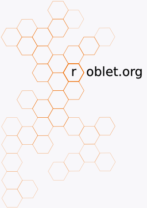

|
Willkommen! Bei roblet®.org finden sich die zusammen, die an der Roblet®-Technik interessiert sind. Ziel von roblet®.org ist die Definition, Betreuung und Verbreitung der Roblet®-Technik. Die Technik soll frei und kostenlos für jedermann und jede Organisation sein. Die Definition erfolgt mit der Absicht der Standardisierung. Der Einsatz von Roblets® soll technisch offen möglich sein. roblet®.org soll den Prozeß der Standardisierung unter Einbeziehung aller Interessierten sicherstellen. |
 |